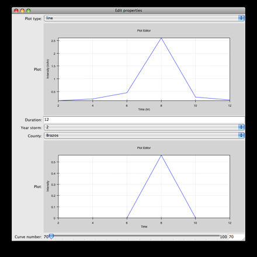

Creating an interactive Hyetograph with Chaco and Traits¶
Overview¶
The perfect rainstorm (not to be confused with The Perfect Storm) has a rainfall pattern that can be mathematically modelled. The rain starts light, progressively gets heavier until halfway though the storm, gets lighter again, and eventually stops. Plots of the rainfall intensity in relation to time are called hyetographs.
This tutorial builds a small application that takes a tiny database of coefficients, and along with user selected values, displays hyetographs. The user provides the duration of the storm, the year of the storm, and one of four counties in Texas. Then using a slider specifying the Curve Number (determined based on the permeability of the soil) a plot shows the intensity vs. time hyetograph plots.
Development Setup¶
To run this demo you must have Chaco and its dependencies installed,
Traits
TraitsGUI
Enable
Why use Traits for this application?¶
Event notification Every time that a trait is changed it sends out notification to all listening functions. This means when a trait is changed in places such as the UI the program will then notify other traits or functions automatically.
Typing Within traits you are allowed to define trats as certain types. Say you have a trait named Name, you can then define it to be a string. Then when you visualize it using the UI, it will interprit the data as a string.
UI-Generation After setting up your traits and performing all the calculations, the Trait’s will automatically generate a GUI view without needing any additional programming.
Importing the necessary functions¶
In This tutorial we will be using numpy, traits, traitsui, and chaco. In calling your function you want to specify where the function is and then import it. The following code snippet imports all the names that will be used for our application.
from traits.api \
import HasTraits, Int, Range, Array, Enum, on_trait_change
from traitsui.api import View, Item
from chaco.chaco_plot_editor import ChacoPlotItem
Trait Definitions¶
This application only requires one class that will contain the Traits and mathematical calculations together. Classes that contain Traits must inherit from the HasTraits function. Python’s multiple inheritance allows for mixing HasTraits objects with other class hierarchies if needed.
Within this class we define all the class variables using Traits types which will later be used in the UI. These traits are set to equal their type similar to many typed languages.
class Hyetograph(HasTraits):
""" Creates a simple hyetograph demo. """
timeline = Array
intensity = Array
nrcs = Array
duration = Int(12, desc='In Hours')
year_storm = Enum(2, 10, 25, 100)
county = Enum('Brazos', 'Dallas', 'El Paso', 'Harris')
curve_number = Range(70, 100)
plot_type = Enum('line', 'scatter')
The above code snippet shows a number of Traits features,
The naming convention with traits is that types are capitalized.
An Array is an array, an Int is an integer, an Enum is a single value from a list of options, and a Range is a value between two numbers.
All traits get a default value, such as whats done in the Arrays, or they can be assigned an initial value as is done in the duration trait.
Descriptions can be added to traits, such as is done in duration. This description is not visible except when viewing the trait in a TraitsUI view, and then the description is seen when the mouse hovers over the variable.
Traits are always contained within the class definition, and each instance of the class will have a unique copy of the traits.
The Traits API Reference contains more information about the standard
Trait types; see the trait_types module in the Traits API Reference.
Setting up the User Interface (UI)¶
HasTraits classes will automatically generate a view that contains an
editable entry for each trait within the class. But a user-defined
view usually looks better, so we’ll use View and Items to change the
default class view. Changing the default UI is done by creating a
trait on the class that is of the View type. Multiple View traits can
be defined and used, with the one named traits_view being used as
the default.
Continuing with our application, here is the View definition.
class Hyetograph(HasTraits):
<... snip ...>
view1 = View(Item('plot_type'),
ChacoPlotItem('timeline', 'intensity',
type_trait='plot_type',
resizable=True,
x_label='Time (hr)',
y_label='Intensity (in/hr)',
color='blue',
bgcolor='white',
border_visible=True,
border_width=1,
padding_bg_color='lightgray'),
Item(name='duration'),
Item(name='year_storm'),
Item(name='county'),
# After infiltration using the nrcs curve number method.
ChacoPlotItem('timeline', 'nrcs',
type_trait='plot_type',
resizable=True,
x_label='Time',
y_label='Intensity',
color='blue',
bgcolor='white',
border_visible=True,
border_width=1,
padding_bg_color='lightgray'),
Item('curve_number'),
resizable = True,
width=800, height=800)
Views generally contain Item objects and named parameters. Views can
also contain Groups of Items as well as many other types of layout
features not covered here. By default, Item objects take a string of
the trait to edit. For example, the Item(name='county') will
create a pull-down menu in the UI showing the four valid counties that
the user can select from.
There are three important observations to be seen in the above view
definition. First, there are two Chaco plot items embedded in the
view. The top plot is the intensity versus time and the bottom is
nrcs versus time. Second, default window will be sized at 800 by 800
pixels, but the option resizable = True will allow the user to
change the size of the window. And third, the traits are split up so
3 of them are displayed below the first plot and only 1 is displayed
below the second. Here is a snapshot of what our application will
display. The plots are empty because we have yet to populate the data
traits
Performing the Hyetograph Calculations¶
The UI for the application is complete, however there is no data. Changing the traits within the GUI by moving the sliders and typing in numbers does nothing because they’re hooked up to nothing and there are no listeners on the trait event notifications. So , next we’ll add some hyetograph calculations that modify the intensity and nrcs Array traits.
def calculate_intensity(self):
""" The Hyetograph calculations. """
# Assigning A, B, and C values based on year, storm, and county
counties = {'Brazos': 0, 'Dallas': 3, 'El Paso': 6, 'Harris': 9}
years = {
2 : [65, 8, .806, 54, 8.3, .791, 24, 9.5, .797, 68, 7.9, .800],
10: [80, 8.5, .763, 78, 8.7, .777, 42, 12., .795,81, 7.7, .753],
25: [89, 8.5, .754, 90, 8.7, .774, 60, 12.,.843, 81, 7.7, .724],
100: [96, 8., .730, 106, 8.3, .762, 65, 9.5, .825, 91, 7.9, .706]
}
year = years[self.year_storm]
value = counties[self.county]
a, b, c = year[value], year[value+1], year[value+2]
self.timeline=range(2, self.duration + 1, 2)
intensity=a / (self.timeline * 60 + b)**c
cumdepth=intensity * self.timeline
temp=cumdepth[0]
result=[]
for i in cumdepth[1:]:
result.append(i-temp)
temp=i
result.insert(0,cumdepth[0])
# Alternating block method implementation.
result.reverse()
switch = True
o, e = [], []
for i in result:
if switch:
o.append(i)
else:
e.append(i)
switch = not switch
e.reverse()
result = o + e
self.intensity = result
def calculate_runoff(self):
""" NRCS method to get run-off based on permeability of ground. """
s = (1000 / self.curve_number) - 10
a = self.intensity - (.2 * s)
vr = a**2 / (self.intensity + (.8 * s))
# There's no such thing as negative run-off.
for i in range(0, len(a)):
if a[i] <= 0:
vr[i] = 0
self.nrcs = vr
In the calculation functions, the traits are treated just like normal class attributes. Behind the scenes, Traits will automatically cast compatible types such as ints to Floats, but will raise an exception if the user tries to pass a string to an Dict trait.
Recalculating when event notification occurs¶
Calling the calculation functions will update the data, but nothing is
going to change in the GUI. The next step is to link the data to the
GUI using a Traits static handler. Static handlers are declared
either with a decorator or through a function name that follows a
specific convention. Alternatively, a dynamic handler is set up by
calling a function at runtime, providing for on-the-fly event
processing. Below is a function that calls the two calculation
functions. The interesting line is the decorator,
@on_trait_change that tells Traits to call the function whenever
any of the values within the list of traits change.
@on_trait_change('duration, year_storm, county, curve_number')
def _perform_calculations(self):
self.calculate_intensity()
self.calculate_runoff()
- So now when the application is run, when the
durationtrait is changed or any of the four listed traits change, the calculation functions are automatically called and the data changes. And these traits will automatically change when the user adjusts the widgets in the UI. So when the user changes the
durationin the UI from 12 hours to 24 hours this will automatically effect both of the plots since the listeners force a recalculation of both of the functions.
Showing the Display¶
In order to start the GUI application an instance of the class must be instantiated, and then a configure_traits() call is done. However we must first call the data calculation functions from within the class to initialize the data arrays. Here’s the last piece of the program.
def start(self):
self._perform_calculations()
self.configure_traits()
f=Hyetograph()
f.start()
start() performs the calculations needed for the Arrays used to plot, and then triggers the UI. The application is complete, and if you now run the program, you should get a running application that resembles the following image,
Congratulations!
Source Code¶
The final version of the program, hyetograph.py.
from traits.api \
import HasTraits, Int, Range, Array, Enum, on_trait_change
from traitsui.api import View, Item
from chaco.chaco_plot_editor import ChacoPlotItem
class Hyetograph(HasTraits):
""" Creates a simple hyetograph demo. """
timeline = Array
intensity = Array
nrcs = Array
duration = Int(12, desc='In Hours')
year_storm = Enum(2, 10, 25, 100)
county = Enum('Brazos', 'Dallas', 'El Paso', 'Harris')
curve_number = Range(70, 100)
plot_type = Enum('line', 'scatter')
view1 = View(Item('plot_type'),
ChacoPlotItem('timeline', 'intensity',
type_trait='plot_type',
resizable=True,
x_label='Time (hr)',
y_label='Intensity (in/hr)',
color='blue',
bgcolor='white',
border_visible=True,
border_width=1,
padding_bg_color='lightgray'),
Item(name='duration'),
Item(name='year_storm'),
Item(name='county'),
# After infiltration using the nrcs curve number method.
ChacoPlotItem('timeline', 'nrcs',
type_trait='plot_type',
resizable=True,
x_label='Time',
y_label='Intensity',
color='blue',
bgcolor='white',
border_visible=True,
border_width=1,
padding_bg_color='lightgray'),
Item('curve_number'),
resizable = True,
width=800, height=800)
def calculate_intensity(self):
""" The Hyetograph calculations. """
# Assigning A, B, and C values based on year, storm, and county
counties = {'Brazos': 0, 'Dallas': 3, 'El Paso': 6, 'Harris': 9}
years = {
2 : [65, 8, .806, 54, 8.3, .791, 24, 9.5, .797, 68, 7.9, .800],
10: [80, 8.5, .763, 78, 8.7, .777, 42, 12., .795,81, 7.7, .753],
25: [89, 8.5, .754, 90, 8.7, .774, 60, 12.,.843, 81, 7.7, .724],
100: [96, 8., .730, 106, 8.3, .762, 65, 9.5, .825, 91, 7.9, .706]
}
year = years[self.year_storm]
value = counties[self.county]
a, b, c = year[value], year[value+1], year[value+2]
self.timeline=range(2, self.duration + 1, 2)
intensity=a / (self.timeline * 60 + b)**c
cumdepth=intensity * self.timeline
temp=cumdepth[0]
result=[]
for i in cumdepth[1:]:
result.append(i-temp)
temp=i
result.insert(0,cumdepth[0])
# Alternating block method implementation.
result.reverse()
switch = True
o, e = [], []
for i in result:
if switch:
o.append(i)
else:
e.append(i)
switch = not switch
e.reverse()
result = o + e
self.intensity = result
def calculate_runoff(self):
""" NRCS method to get run-off based on permeability of ground. """
s = (1000 / self.curve_number) - 10
a = self.intensity - (.2 * s)
vr = a**2 / (self.intensity + (.8 * s))
# There's no such thing as negative run-off.
for i in range(0, len(a)):
if a[i] <= 0:
vr[i] = 0
self.nrcs = vr
@on_trait_change('duration, year_storm, county, curve_number')
def _perform_calculations(self):
self.calculate_intensity()
self.calculate_runoff()
def start(self):
self._perform_calculations()
self.configure_traits()
f=Hyetograph()
f.start()